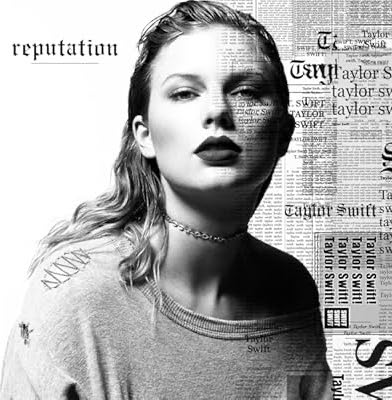

Top 3 Best Albums by Taylor Swift
Midnight
Midnight is Taylor Swift’s tenth studio album, presenting a journey through nightmares and sweet dreams. The album features a synth-pop sound and explores themes of mental health, internal conflicts, and the choice between relationships and career.
Listen Album

reputation
Reputation (2017) is Taylor Swift’s sixth studio album. Its main theme is image, scandals, and how she is perceived by the public. The sound is darker and more electronic, with elements of pop, synth-pop, and EDM. Key tracks include Look What You Made Me Do, …Ready For It?, and Delicate. It became one of the best-selling albums of 2017.
Listen AlbumRed
Red (2012) is Taylor Swift’s fourth studio album. It blends country, pop, and rock. The main themes are love, heartbreak, and intense emotions. T he album was praised for its honest lyrics and diverse sound. Key tracks include We Are Never Ever Getting Back Together, I Knew You Were Trouble, 22, and All Too Well..
Listen Album